Advanced
From here you can Configure SharePoint API permissions,Sync unlicensed users, Show external users etc.-
Click on Click Here link in settings, which redirect to SharePoint admin centre access API page.
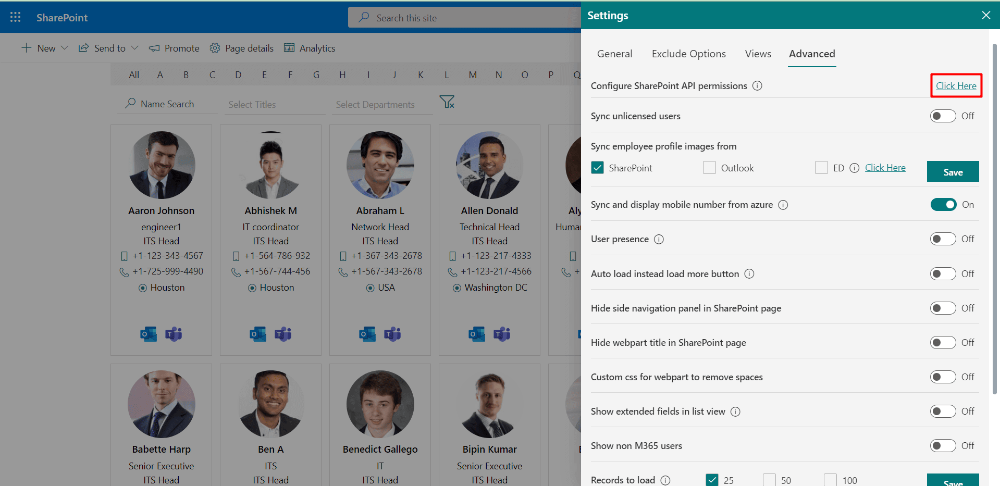 -
There you will find three Microsoft graph under organization-wide. Select and click on Approve one by one for all three Microsoft graph.
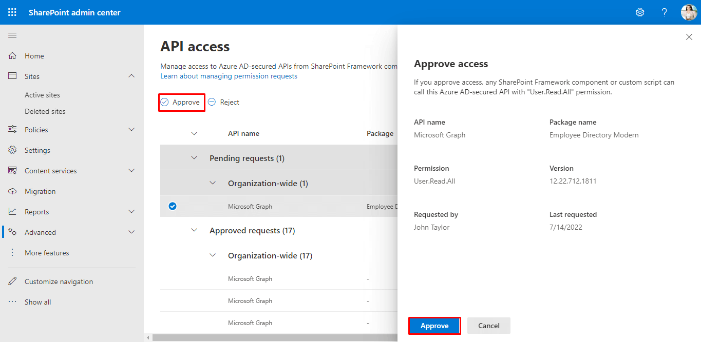
Configure SharePoint API permissions
SharePoint admin can configure API permissions. This configuration helps in excluding block sign-in users, excluding hidden users in GAL,
excluding shared mailbox users of O365, syncing mobile numbers from azure AD.
To confiure SharePoint API permission follow the below steps:
- Sync unlicensed users: Technically users who does not contain work email Id in SharePoint profile is considered as unlicensed user, you can sync those users by enabling toggle switch.
Sync unlicensed users
Show external users
If you enable this feature, you can able to view external users. Orange Circle around the image icon indicates it’s a guest user or external users in Employee Directory Modern.If you added newly guest users in your O365 it takes 8 to 24 hours to get sync in the Employee Directory.

Organizational Chart: If you enable this feature, the organizational chart icon will display on the home page.
Organizational Chart
In the organization chart, the signed-in user can view their reporting or relationship hierarchy in the organization.
You also download the organization chart by clicking on the print icon.
Organizational Chart in Profile Card
It is the individual organization chart of the user. It displays the hierarchy of the users, to whom the user reports, and who reports to the user.

You can also download the organization chart by clicking on the print icon.
Sync employee profile images
Here we have 3 option to sync the images namely SPO, outlook and ED.
In case if you select outlook or ED options, if image is not available for outlook or ED, image from SharePoint user profile if exist.
ED: Change the source of profile images, you can use custom images by placing images in image library.
Click on click here, redirect to image library upload the images. Format of image is -username@domain.com.jpg
Sync and display mobile number from azure
Sync employee profile images from: This works, if SharePoint API is enabled.
It syncs mobile numbers from azure. If the mobile number is not available in azure, it displays the mobile number if exists in the SharePoint user profile.
User presence
This setting will work if SharePoint API is enabled, it shows MS teams status on profiles in home page.Auto load instead load more button
If you enable this, users can load more records automatically on scroll or on click of load more button.
Hide webpart title in SharePoint page
If you enable this, the webpart title of the SharePoint page will hide.
Custom css for webpart to remove spaces
If you enable this, extra space on the screen will hide and displays more profiles on the screen.

Record to load
Load number of profiles on refresh or first-time page load, you can select 25 or 50 or 100. Higher numbers come with additional page load time, please select wisely.
-
Select the template (Birthday or Anniversary template) for which you want to edit as per the requirement.
-
As per requirement, edit the message, add placeholders and upload the image.
-
Finally, Click on the Save button.
Birthday and anniversary templates
On the birthday and anniversary of the user, the user will get notifications. This works on the Power Automate setup. Here you can customize the email template, which will get notified to the users on their birthday or anniversary.
Here you can change template body format for Birthday template and Anniversary template
-
Go to Add tab, select AD Properties, enter Property Name and select the Filterable checkbox.
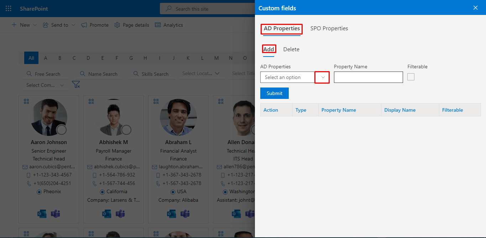
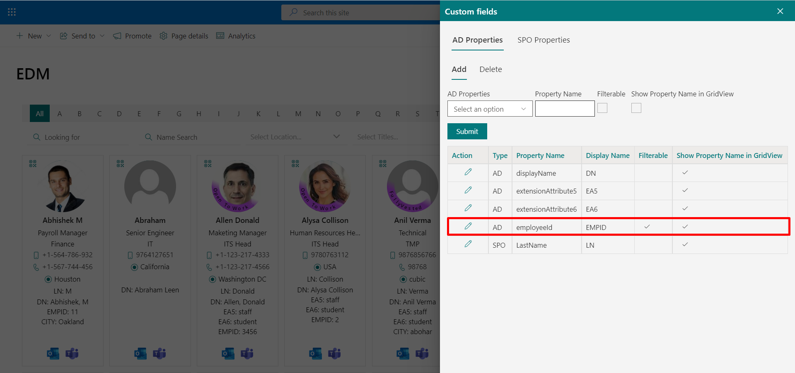 -
The added cutom field will be displayed on the profile card. The selected checkbox Filterable, the custom will be displayed on the home page.
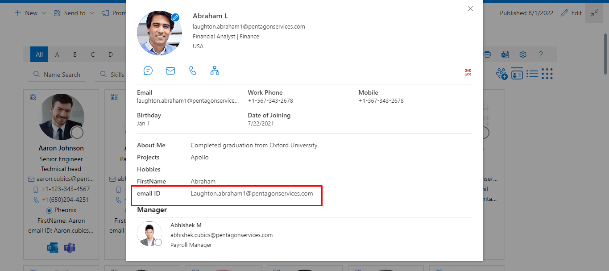
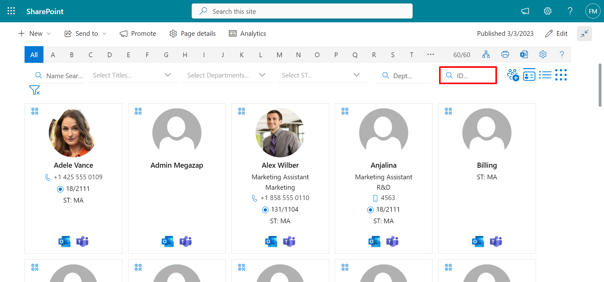 -
Go to Add tab, select SPO Properties and enter Property Name.
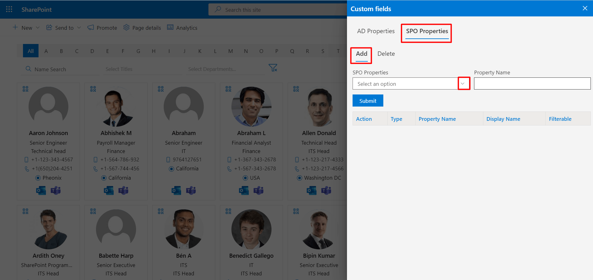
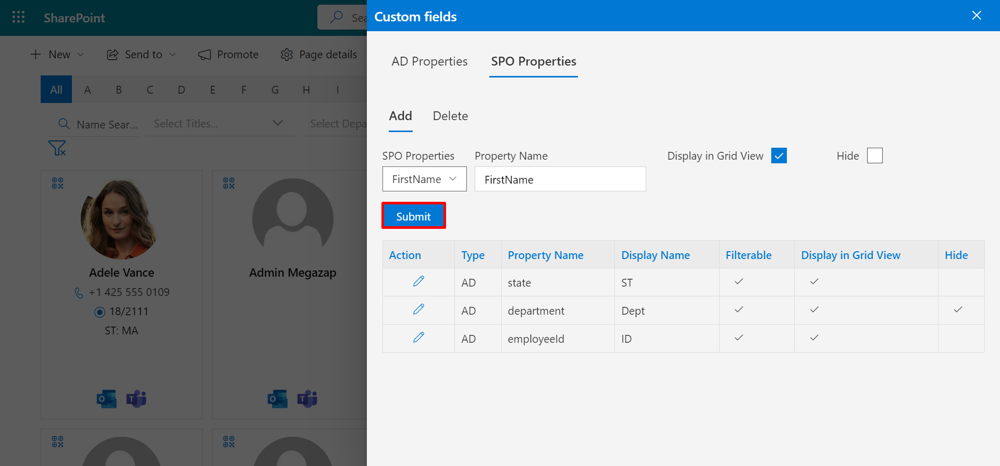 -
The added cutom field will be displayed on the profile card.
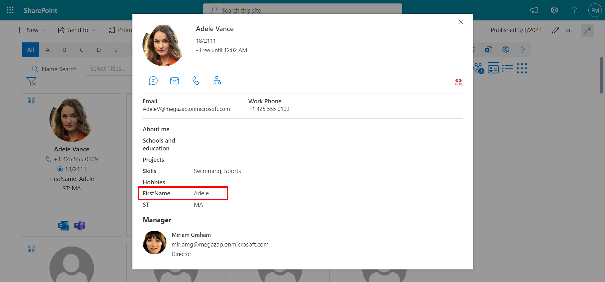
Custom fields
From this setting you can create custom column in Employee Directory Modern. You can add custom fields and sync details from Azure AD and SPO location.
AD Properties:
SPO Properties:
Edit: From here, you can edit the custom field. Click on the edit icon under action. Update the AD and SPO properties and property names as per requirements. Finally, click on the Update button.
Delete: From here, you can delete the custom field. Go to the delete tab, and select the checkbox under action. Finally click on the delete button.
-
Go to the Exchange admin center, click on recipients from the left navigation panel.
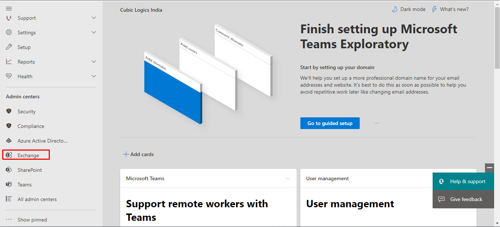
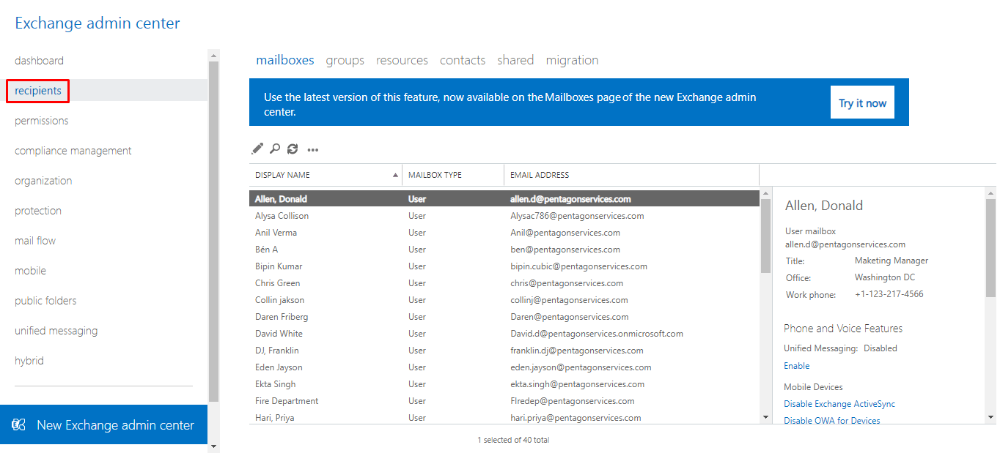 -
Under mailboxes, all users are visible. Double-click the user’s display name and then more options.
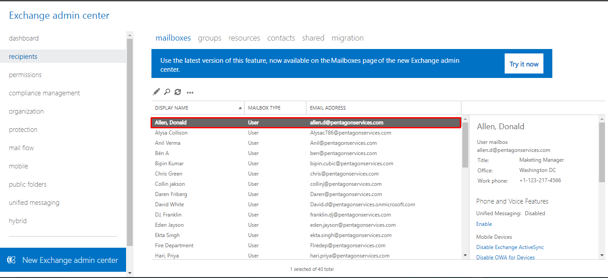
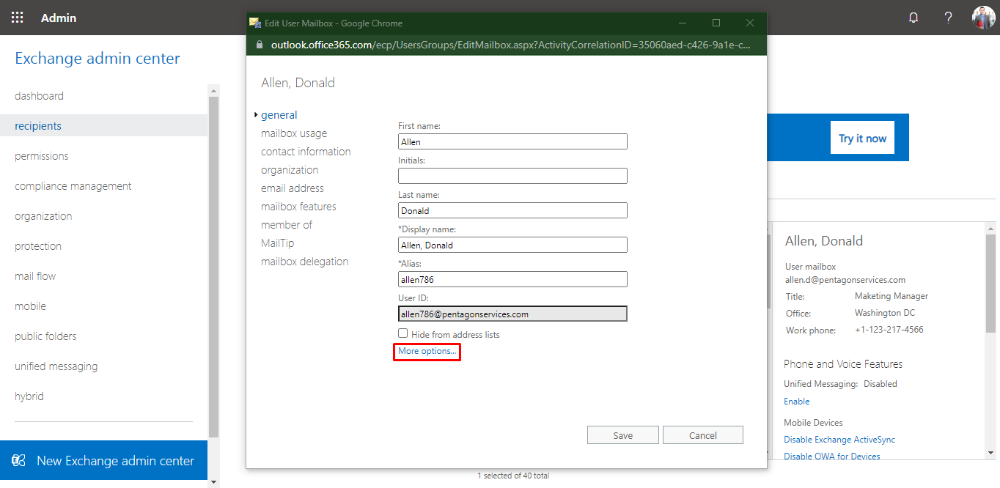 -
Add the assistant username address in the custom attributes(3) and click on the OK button.
In the same way, you can add to other users.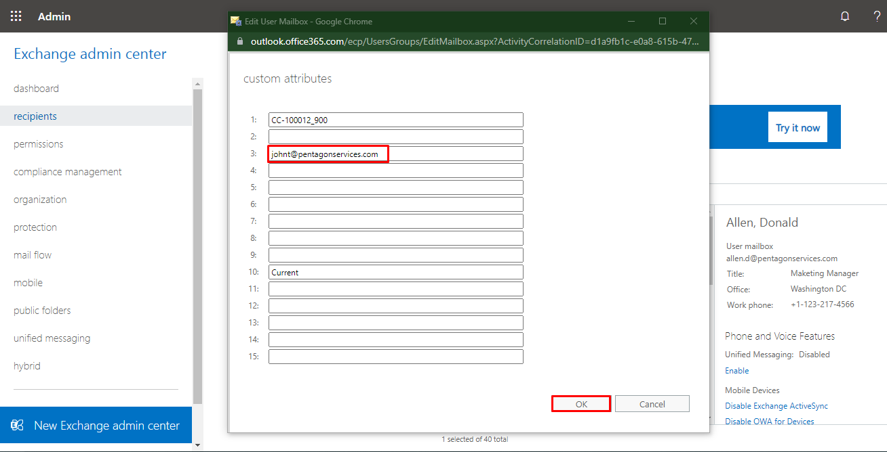 -
Go to the Settings> Advance settings> click on the Action button of Executive Assistant relationship.
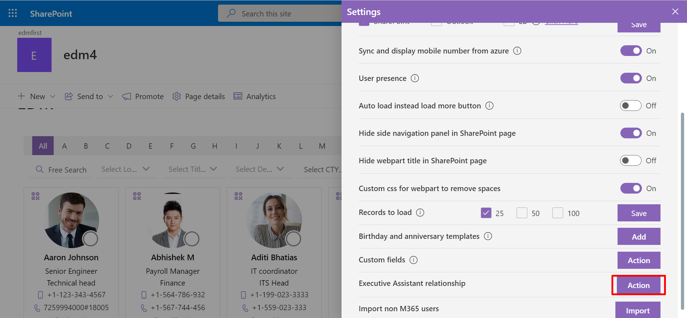 -
Under Add tab, select the AD Properties and give the Property Name. Then, click on the Submit button.
Here, we selected extensionAttribute 3. Because in the Exchange admin center, the assistant username address is added in the custom attribute 3. And given the Property Name as Assistant which is meaningful.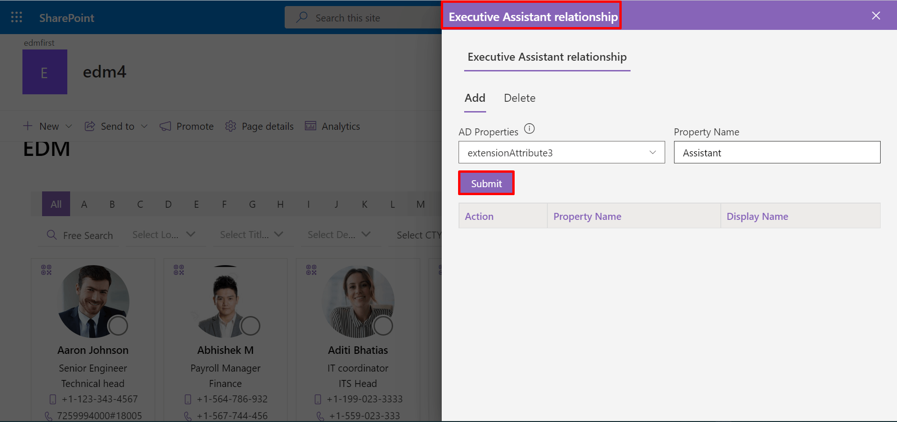 -
Now go to the views in the settings and update the Executive label. Here, updated as Executives.
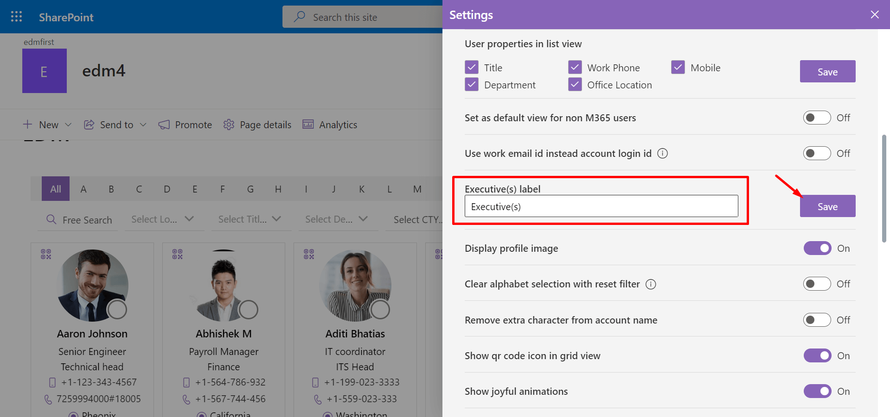
Executive Assistant relationship
Executive Assistant relationship:From here, you can show the assistant on the user’s profile card and executives on the assistant’s profile card.
This feature works with SharePoint API SharePoint API, please configure it.
Step1
First, add username address in extension attribute.
To add follow the below steps:
Step2
Result:
For users, their Assistant name shows in the profiles card.
The users are Executives shown in the profile card of the assistant as shown in below.
-
Click on Import button, this displays Add users using csv file .
-
Choose the data loaded CSV file from system and upload the file.
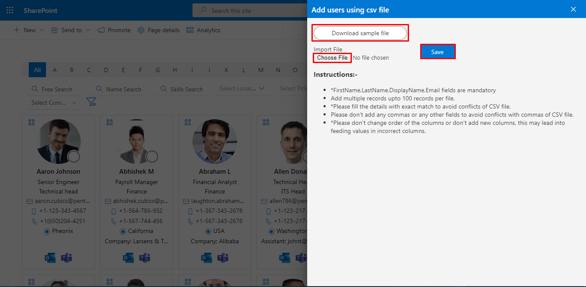 -
Finally click on Save button.
Import non M365 users
From here, you can import non-M365 users. Added users will be displayed when you click on the non365 user's icon on the home page.
To import non-M365 users, follow below steps: